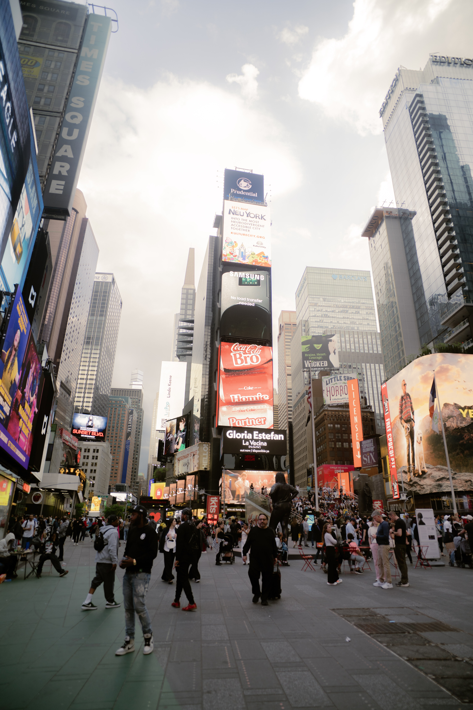
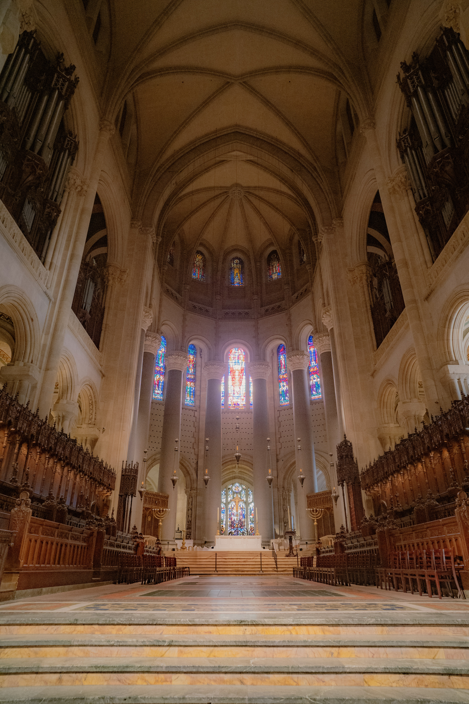

Places
New York City Highlights
New York City is home to countless iconic landmarks, including the Empire State Building, Times Square, the 9/11 Memorial, and the world-renowned Statue of Liberty. It's the most urbanized and vibrant place I have ever visited. Although the city is undeniably expensive, experiencing it even once was truly worth it. The memories I created there with my friends are treasures I’ll cherish forever.

Times Square is one of the most famous and vibrant intersections in the world, located in the heart of Manhattan, New York City. Often called “The Crossroads of the World,” it’s known for its dazzling billboards, bright lights, and nonstop energy. As a major commercial and tourist hub, Times Square is where entertainment, culture, and city life come together—home to Broadway theaters, famous restaurants, and annual events like the New Year’s Eve Ball Drop. Whether day or night, it’s a place that truly captures the spirit and excitement of New York City.

St. John the Divine Cathedral, located in Manhattan, is one of the largest cathedrals in the world. Known for its stunning Gothic architecture and beautiful stained-glass windows, it also serves as a cultural venue for concerts and events. I felt truly thrilled to perform there and to experience the incredible echo that filled the entire space—an unforgettable moment in such a majestic setting.